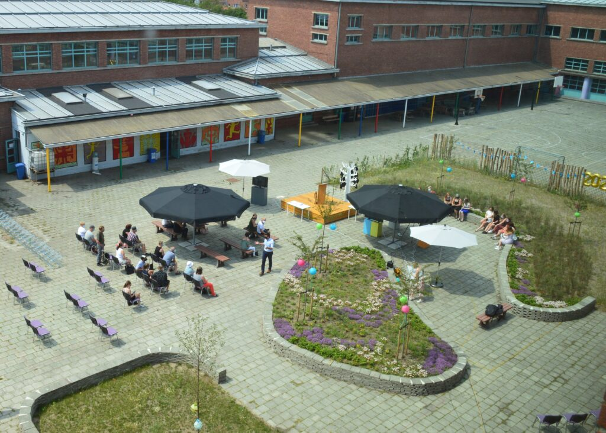

About Me
Animation
ICT & Elektronica Project
Home
Ik ben Kyano De Maertelaere en ben 17.
Ik ben een leerling van atheneum de Tandem uit Eeklo.
Ik zit in de richting Informatica beheer en woon in Adegem. 